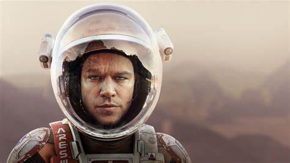
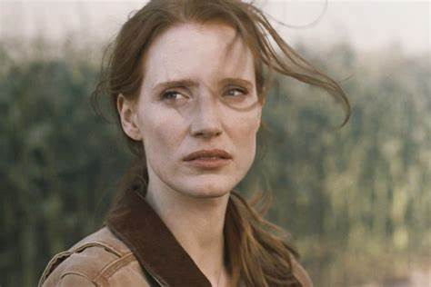

Starring
Matt Damon

Matt Damon is an exceptional American actor who has graced the screens in numerous blockbuster hits. Interestingly, he began his career in the late 1980s with minor roles in both films and television shows. However, he gained widespread recognition for his breakout performance in "Good Will Hunting", which he co-wrote with his friend and fellow actor, Ben Affleck. The film was a commercial success, and Damon earned an Academy Award for Best Original Screenplay, along with a nomination for Best Actor.
Since then, Damon has gone on to star in several other critically acclaimed and commercially successful films such as the "Bourne" series, "Ocean's Eleven" trilogy, "The Martian," and "Ford v Ferrari." His performances have garnered multiple Academy Award nominations and other awards, including a Golden Globe and a Screen Actors Guild Award.
Apart from his impressive acting career, Damon is deeply committed to philanthropy. He is a co-founder of Water.org, a non-profit organization that is focused on providing clean water and sanitation to people in developing countries. Additionally, he supports numerous other charitable causes and organizations that seek to make a positive impact in the world.
In summary, Matt Damon is an exceptional actor who has contributed immensely to the film industry, and also to the world at large, through his dedicated philanthropy work.
Damon's performance in the martian is simply amazing! He brings Watney's wit, intelligence, and fierce determination to life in a way that really draws the audience in. Despite the seriousness of the situation, Damon infuses the character with a sense of humor that helps to lighten the mood of the film and make it more enjoyable for everyone. At the same time, Damon also does an incredible job of portraying Watney's emotional struggles and the devastating toll that isolation takes on his mental health. And let's not forget the physicality of the role! Damon had to go through some pretty intense training to convincingly play an astronaut, and his hard work paid off. He brings an authenticity to Watney's struggle that is truly impressive. Overall, Matt Damon's performance in "The Martian" is nothing short of incredible. He truly is one of the most talented actors of his generation!
Jessica Chastain
Jessica Chastain's movies was Born on March 24, 1977, in Sacramento, California, the American actress first appeared on TV in the mid-2000s with roles in "ER" and "Veronica Mars." But it was her role in "The Tree of Life" in 2011 that got her nominated for a Golden Globe for Best Supporting Actress. From there, Chastain went on to play in films such as "Take Shelter" and "The Help," and ofcourse not to forget, her performances in "Zero Dark Thirty," "Interstellar," "A Most Violent Year," and "Molly's Game" were just amazing. Her role of Maya in "Zero Dark Thirty" got her a Golden Globe and an Oscar nomination for Best Actress. But that's not all. Chastain also has some involvement in standing up for women's rights and fighting against sexual harassment and discrimination in the entertainment industry. All in all, Jessica Chastain is not only an amazing acrtress, but also a wonderfull human being, her talent, dedication, and passion for social causes make her an icon in Hollywood. She's got the awards and nominations to back it up, but it's her sheer inspiring personality that really shines through.
Chastain plays the role of: Commander Melissa Lewis, the leader of the Ares III mission to Mars. She is responsible for making decisions that occur during the mission and has to make sure that the crew stays safe. Chastain delivers a strong performance as Lewis, making sure that the audience notices both her intelligence and her compassion. Chastain's portrayal of Lewis is a perfect example for her versatility as an actress. Despite being a relatively small role when looking at screen time, she manages to make a big impact in the film, adding depth and nuance to the character. Her chemistry with co-star Matt Damon is also a highlight of the film, as the two actors share a compelling and dynamic on-screen relationship.
Kristen Wiig
Kristen Wiig is an actress and comedian. She was born on August 22, 1973, in Canandaigua, New York. Wiig got her start in the comedy world as a member of the improvisation group: "The Groundlings" in Los Angeles. She later joined the cast of the sketch series "Saturday Night Live," where she became known for her weird and funny characters and impressions. Her time on "Saturday Night Live" led to Wiig being recognized as an amazing comedian. In addition to her work on "SNL," Wiig has also appeared in numerous films, including "Bridesmaids," "The Secret Life of Walter Mitty," "Ghostbusters," and "Wonder Woman 1984," among others. She has also lent her voice to several animated projects, including "Despicable Me" and "How to Train Your Dragon." Wiig is known for her wit, dry sense of humor, and the ability bringing both humor and emotion to her roles. Her performances often incorporate elements of comedy, Wiig has a talent for making even the most weird situations believable..
In "The Martian," Kristen Wiig plays the role of Annie Montrose, the NASA's PR officer in charge of managing media and public relations for the Ares III mission to Mars. Despite the relatively small size of her role, Wiig infuses the character with a sense of urgency and professionalism that emphasizes the gravity of the mission and the immense pressure that the NASA team is under. In the film, Wiig demonstrates her versatility as an actress, departing from her usual comedic roles to deliver a nuanced and restrained performance. Her portrayal of Annie Montrose adds to the realism and authenticity of the film, bringing a human touch to the intricate workings of the NASA team. Of particular note are Wiig's scenes with Jeff Daniels, who plays the director of NASA. These tense and well-acted moments exemplify the complexities and challenges inherent in managing such a high-pressure situation. Overall, Wiig's performance in "The Martian" is a testament to her range and ability to deliver a strong performance in any genre.